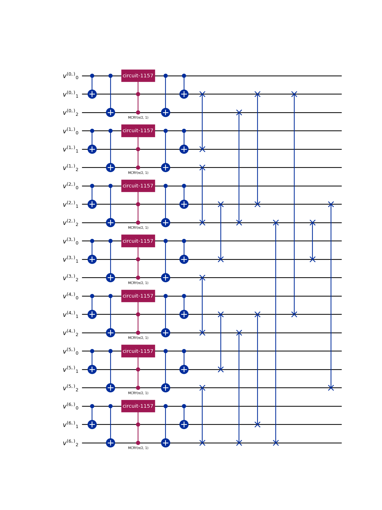
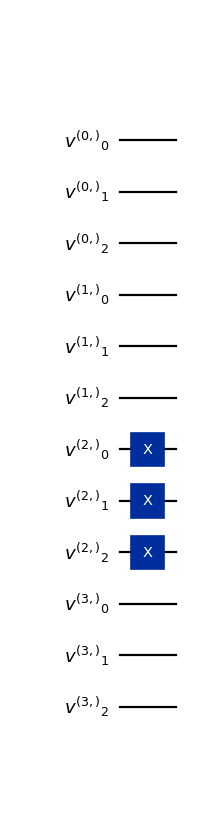
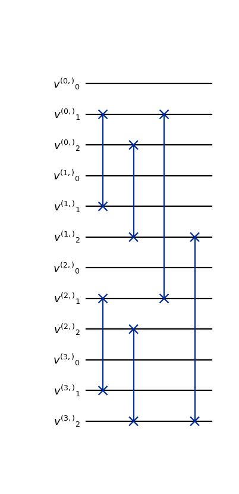
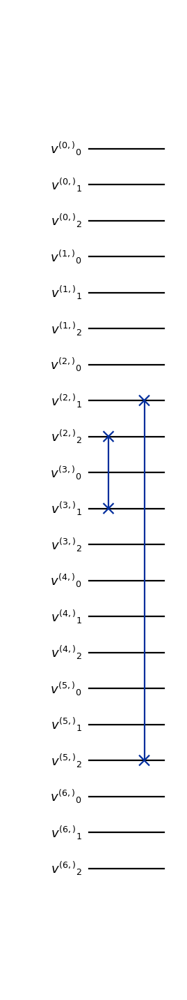
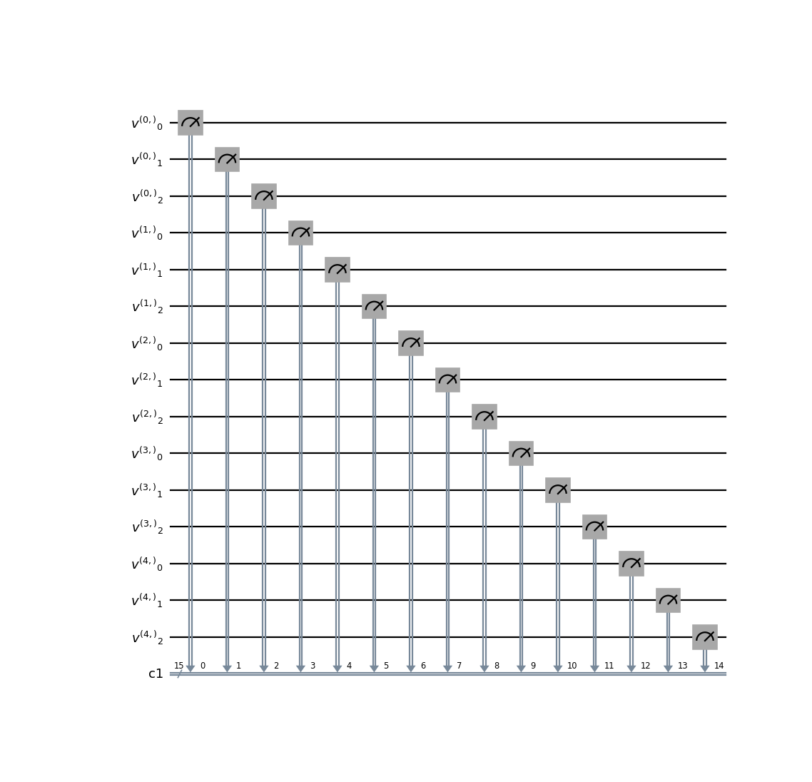

LQLGA Circuits#
This page contains documentation about the quantum circuits that make up the Linear Quantum Lattice Gas Automata (LQLGA). For a more in-depth depth description of the LQLGA algorithm, we suggest [4], [3], and [1]. The LQGLA encodes a lattice of \(N_g\) gridpoints with \(q\) discrete velocities each into \(N_g \cdot q\) qubits. The time-evolution of the system consists of the following steps:
Initial Conditions prepare the starting state of the flow field.
Streaming move particles across gridpoints according to the velocity discretization.
Reflection circuits apply boundary conditions that affect particles that come in contact with solid obstacles. Reflection places those particles back in the appropriate position of the fluid domain.
Collision operators create superposed local configurations of velocity profiles.
Measurement operations extract information out of the quantum state, which can later be post-processed classically.
This page documents the individual components that make up the CQLBM algorithm. Subsections follow a top-down approach, where end-to-end operators are introduced first, before being broken down into their constituent parts.
End-to-end algorithms#
- class qlbm.components.LQLGA(lattice, logger=<Logger qlbm (WARNING)>)[source]#
Implementation of the Linear Quantum Lattice Gas Algorithm (LQLGA).
For a lattice with \(N_g\) gridpoints and \(q\) discrete velocities, LQLGA requires exactly \(N_g \cdot q\) qubits.
That is exactly equal to the number of classical bits required for one deterministic run of the classical LGA algorithm.
More information about this algorithm can be found in Love [4], Kocherla et al. [3], and Georgescu et al. [1].
Example usage:
from qlbm.components.lqlga import LQLGA from qlbm.lattice import LQLGALattice lattice = LQLGALattice( { "lattice": { "dim": {"x": 7}, "velocities": "D1Q3", }, "geometry": [{"shape": "cuboid", "x": [3, 5], "boundary": "bounceback"}], }, ) LQLGA(lattice=lattice).draw("mpl")
(
Source code,png,hires.png,pdf)
- Parameters:
lattice (LQLGALattice)
logger (Logger)
{kind=link}
{kind=link}
Initial Conditions#
- class qlbm.components.LQGLAInitialConditions(lattice, grid_data, logger=<Logger qlbm (WARNING)>)[source]#
Primitive for setting initial conditions in the
LQLGAalgorithm.This operator allows the construction of arbitrary deterministic initial conditions for the LQLGA algorithm. The number of gates required by this operator is equal to the number of enabled velocity qubits across all grid points. The depth of the circuit is 1, as all gates are applied in parallel at each grid point.
Example usage:
from qlbm.lattice import LQLGALattice from qlbm.components.lqlga import LQGLAInitialConditions lattice = LQLGALattice( { "lattice": { "dim": {"x": 4}, "velocities": "D1Q3", }, "geometry": [], }, ) initial_conditions = LQGLAInitialConditions(lattice, [(tuple([2]), (True, True, True))]) initial_conditions.draw("mpl")
(
Source code,png,hires.png,pdf)
- Parameters:
lattice (LQLGALattice)
grid_data (List[Tuple[Tuple[int, ...], Tuple[bool, ...]]])
logger (Logger)
{kind=link}
{kind=link}
Streaming#
- class qlbm.components.LQLGAStreamingOperator(lattice, logger=<Logger qlbm (WARNING)>)[source]#
Streaming operator for the
LQLGAalgorithm.Streaming is implemented by a series of swap gates as described in [7]. The number of gates scales linearly with size of the grid, while the depth scales logarithmically.
Example usage:
from qlbm.components.lqlga import LQLGAStreamingOperator from qlbm.lattice import LQLGALattice lattice = LQLGALattice( { "lattice": { "dim": {"x": 4}, "velocities": "D1Q3", }, "geometry": [], }, ) streaming_operator = LQLGAStreamingOperator(lattice) streaming_operator.draw("mpl")
(
Source code,png,hires.png,pdf)
- Parameters:
lattice (LQLGALattice)
logger (Logger)
{kind=link}
{kind=link}
Reflection#
- class qlbm.components.LQLGAReflectionOperator(lattice, shapes, logger=<Logger qlbm (WARNING)>)[source]#
Operator implementing reflection in the
LQLGAalgorithm.Reflections in this algorithm can be entirely implemented by swap gates. The number of gates scales with the number of gridpoints of the solid geometry. The depth of the operator is 1.
Attribute
Summary
latticeThe lattice the operator acts on.
shapesA list of boundary-conditioned shapes.
loggerThe performance logger, by default
getLogger("qlbm").Example usage:
from qlbm.components.lqlga import LQLGAReflectionOperator from qlbm.lattice import LQLGALattice lattice = LQLGALattice( { "lattice": { "dim": {"x": 7}, "velocities": "D1Q3", }, "geometry": [{"shape": "cuboid", "x": [3, 5], "boundary": "bounceback"}], }, ) reflection_operator = LQLGAReflectionOperator( lattice, shapes=lattice.shapes["bounceback"] ) reflection_operator.draw("mpl")
(
Source code,png,hires.png,pdf)
- Parameters:
lattice (LQLGALattice)
shapes (List[LQLGAShape])
logger (Logger)
{kind=link}
{kind=link}
Collision#
- class qlbm.components.GenericLQLGACollisionOperator(lattice, logger=<Logger qlbm (WARNING)>)[source]#
Equivalence class-based LGA collision operator for the
LQLGAalgorithm.This operator applies the
EQCCollisionOperatoroperator to all velocity qubits at each grid point.- Parameters:
lattice (LQLGALattice)
logger (Logger)
Measurement#
- class qlbm.components.LQLGAGridVelocityMeasurement(lattice, logger=<Logger qlbm (WARNING)>)[source]#
Measurement operator for the
LQLGAalgorithm.This operator measures the velocity qubits at each grid point in the LQLGA lattice.
Example usage:
from qlbm.components.lqlga import LQLGAGridVelocityMeasurement from qlbm.lattice import LQLGALattice lattice = LQLGALattice( { "lattice": { "dim": {"x": 5}, "velocities": "D1Q3", }, "geometry": [], }, ) LQLGAGridVelocityMeasurement(lattice=lattice).draw("mpl")
(
Source code,png,hires.png,pdf)
- Parameters:
lattice (LQLGALattice)
logger (Logger)
{kind=link}
{kind=link}